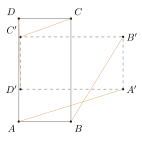
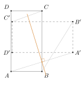
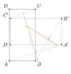
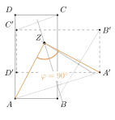

Aufgabe 3.3
Durch welche Drehung wurde das Rechteck $ABCD$ auf das Rechteck $A'B'C'D'$ abgebildet? Konstruieren Sie das Zentrum der Drehung und geben Sie den Drehwinkel an.

Womit anfangen? Suchen Sie nicht das Zentrum, sondern eine Bedingung, die es erfüllen muss.
- Wie weit ist das Zentrum von einem Punkt entfernt, wie weit von seinem Bildpunkt?
- Welche Punkte der Ebene haben von zwei gegebenen Punkten denselben Abstand?
- Wie viele solcher Bedingungen brauchen Sie, um einen Punkt festzulegen?
Gegeben: das Rechteck $ABCD$ und sein Bild $A'B'C'D'$.
Schritt 1: die Verbindungsstrecken zeichnen

Warum gerade die: Ein Punkt und sein Bildpunkt liegen auf demselben Kreis um das Zentrum. Ihre Verbindungsstrecke ist eine Sehne dieses Kreises — und die Mittelsenkrechte einer Sehne geht immer durch den Mittelpunkt. Genau das macht diese Strecken nützlich.
Schritt 2: die Mittelsenkrechte von $\overline{AA'}$

Was man damit weiss: Jeder Punkt dieser Geraden ist von $A$ und von $A'$ gleich weit entfernt. Das Zentrum ist so ein Punkt, liegt also irgendwo auf dieser Geraden. Wo genau, sagt sie allein noch nicht.
Schritt 3: die Mittelsenkrechte von $\overline{BB'}$ schneidet sie in $Z$

Warum das reicht: Dasselbe Argument mit $B$ statt $A$. Das Zentrum liegt auf beiden Geraden — also in ihrem Schnittpunkt, und der ist eindeutig. Die Mittelsenkrechten von $\overline{CC'}$ und $\overline{DD'}$ müssen durch denselben Punkt laufen; sie sind die Probe, nicht die Konstruktion.
Schritt 4: den Drehwinkel abgreifen

Warum an einem Paar genügt: Eine Drehung dreht alle Punkte um denselben Winkel. Man misst ihn deshalb an einem beliebigen Paar, hier bei $A$: $\varphi = \angle AZA' = 90^\circ$.
Ergebnis
Das Rechteck wurde um $Z$ um $90^\circ$ im Gegenuhrzeigersinn gedreht.
Im Video: Etappe 4 · Schultypische Beispiele bei 6:20